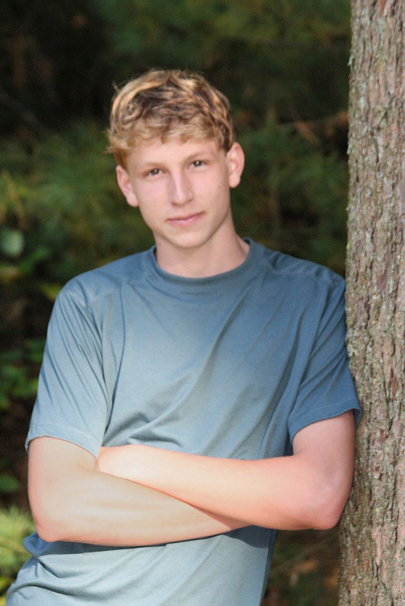
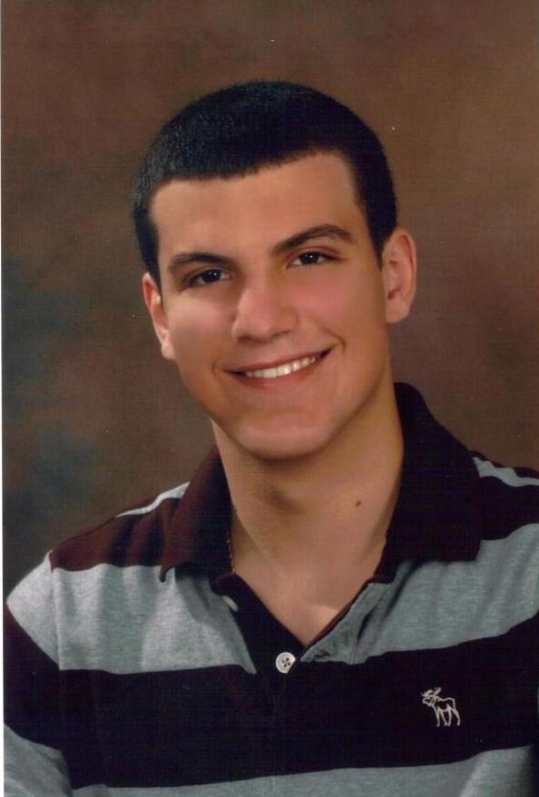
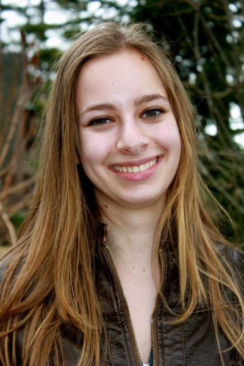
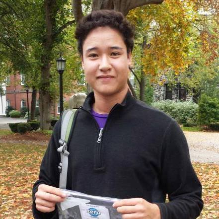
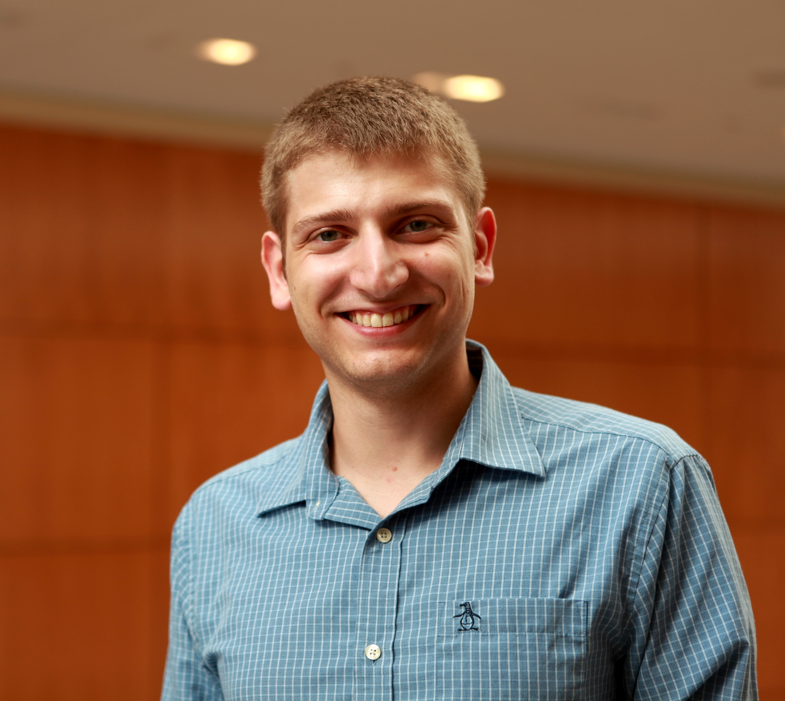

Current Members
Peter Cavanagh
Peter Cavanagh is a junior studying Biochemistry and Engineering Science. He is interested in pursuing interdisciplinary research efforts to solve pertinent problems in biology, chemistry, public health, and other areas. Peter works to educate underclassmen and non-science majors in Biology and Chemistry. He does bio-analytical research in the Walt Lab, and enjoys backpacking and volunteering as a WEMT in his spare time.

Christopher Ghadban
Christopher Ghadban graduated from Tufts University in May 2014 in Chemical Engineering and Biotechnology. Since his freshman year, he held leadership roles in various organizations; these include the position of Education Committee Chair and Class of 2014 Representative to the Tufts Community Union (TCU) Senate and student representative to the School of Engineering Curriculum Committee. More recently, Mr. Ghadban has led electrochemical research at Reactive Innovations and directed The Future of Phage and Synthetic Biology, a conference on bacteriophage application. As a founding director of the Tufts Synthetic Biology, he believes the organization is a chance to expand one’s knowledge and provide experience in more self- directed research than is otherwise available to undergraduate students.

Michaela Gold
Michaela Gold is a current sophomore at Tufts University majoring in Biology and Biotechnology. She is currently studying DNA fragility in S. Pombe yeast with the Freudenreich lab. Michaela has a strong passion for molecular biology and microbiology, which she hopes to eventually use to enter the biotechnology field and research new drugs. Besides Tufts iGEM, Michaela is an avid rock climber and a member of the Tufts Climbing Team.

Connor McBrine
Connor McBrine is a junior pursuing majors in Biology and Biotechnology. Several of his courses in genetics and molecular biology revealed the immense potential of synthetic biology in healthcare and industry. In addition to iGEM, Connor works to better understand DNA repair pathways in Drosophila with CRISPR-Cas9 genome editing. He hopes to eventually use this technology to develop therapies and even cures for genetic disorders. Various positions teaching students about biology and previous work as an EMT have also instilled Connor with a strong interest in scientific education and medicine, both of which he hopes to one day incorporate into a career in biology. In his free time, Connor enjoys reading about military history and discovering new music at local concerts.
Denali Rao
Denali is a junior studying Computer Science and Cognitive Science. She has always been interested in biological research, interning in a Molecular Biology lab for two years before turning her interests to computer science. Now, as a junior, she is pursuing research that integrates computer science and biology.
[img]
Jesse Starger
Jesse Starger is a sophomore at Tufts University majoring in Chemical and Biological Engineering. Jesse has research experience in the polymer field as he continues to work in the Yi lab with overarching interests in sustainable and environmental engineering. Outside of class, Jesse is a member of the Tufts University Men’s Rugby Football Club in addition to being the Eco-Rep for his dorm. While with the Tufts iGEM Team, Jesse hopes to increase his exposure to other academic fields through more independent forms of study than what a traditional undergraduate education may typically allow.

Petar Todorov
Petar Todorov is a senior majoring in chemistry with an established tradition in research. During the last five years he has worked on projects spanning biophysics, molecular biology, and biomedical engineering. He currently works on elucidating restriction enzyme mechanisms in the Walt group at Tufts. Mr. Todorov established Tufts iGEM in early 2013. Since then he has worked to help the group secure funding, laboratory space, and faculty support in addition to guiding literature searches and drafting proposals outlining potential routes of research. Beyond the bench, he is interested in the intersection science, technology, society, and ethics. Mr. Todorov was one of the students involved in organizing the Institute of Global Leadership’s 2013 professional workshop focused on Privacy and Progress in Whole Genome Sequencing. Outside the lab Petar enjoys travel, photography, and reading in Bulgarian, English, and Latin.

Michael Zalesne
Michael is a junior from Columbia, SC, majoring in Biopsychology. He first got involved with Tufts iGEM shortly after its founding in February 2013. As director, he has helped organize a conference on the Future of Phage Therapy and Synthetic Biology and worked with faculty and administrators to secure funding and housing for our team. Michael has worked in several labs at different universities, and he is also involved in Tufts Sustainability Collective and Active Minds on campus. He enjoys being outdoors, going to the gym, and rock climbing.